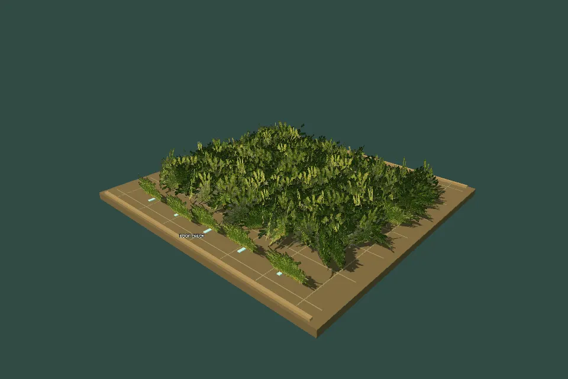
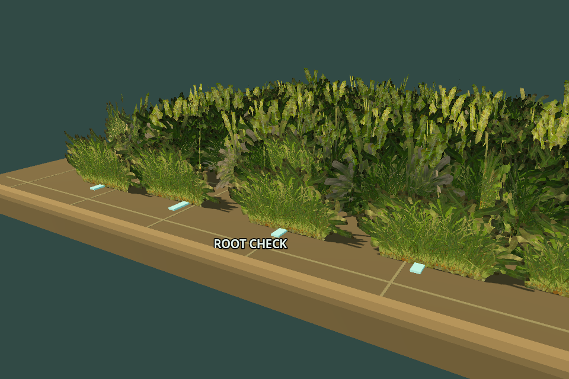
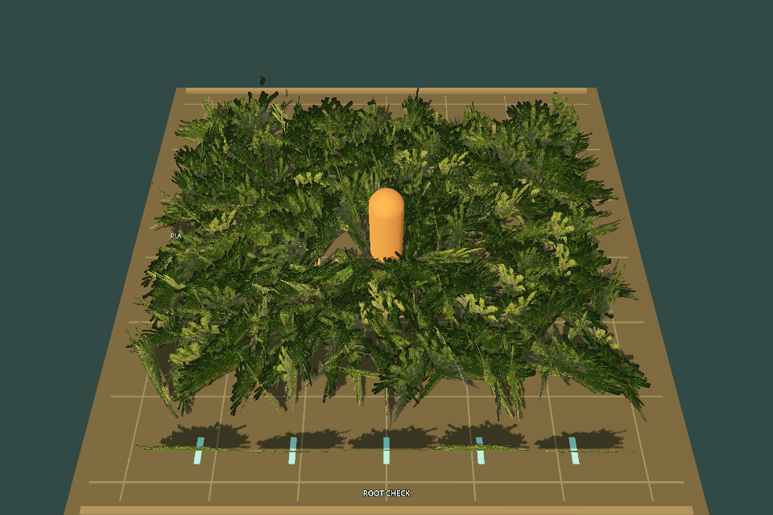
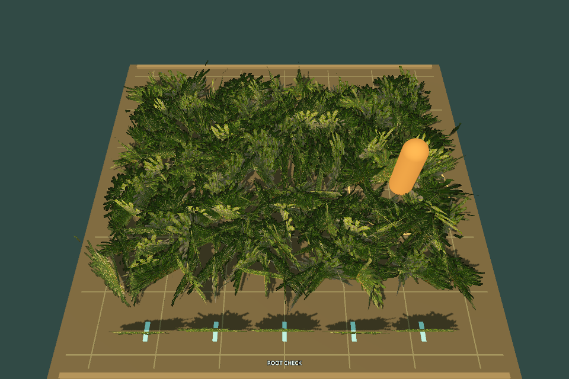
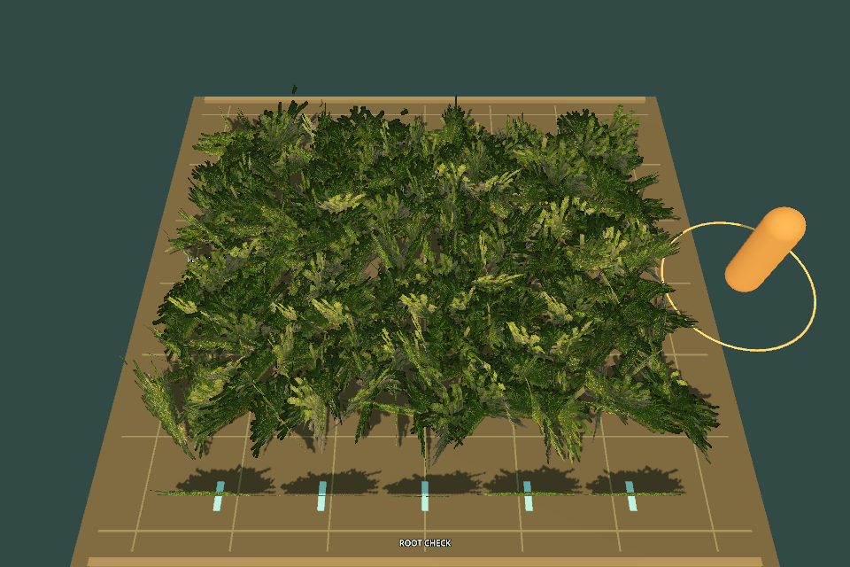
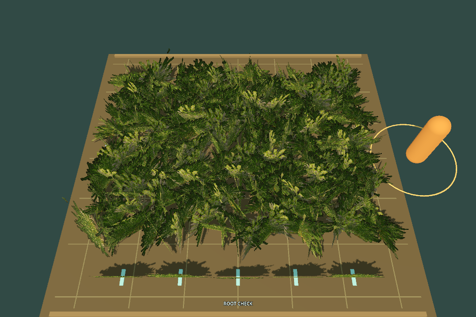

FG01 / FOREST GRASS / TASK PREVIEW / S1 P3
一片草地，三层递进。
从森林工程提取草模型与贴图，拆成可以单独启动的小场景。先让草随风动，再固定草根，最后加入玩家经过后的倒伏与恢复。三层共用同一场地，保留前一层已完成的能力。
当前为题目审核预览：下面是本地编写的参考效果，未接入 API、未运行模型实验。L2 已按你的确认使用“根部固定，顶部随风摆动”。
L1 · 本地参考动画

实际 Godot 连续步进截图合成的 8 fps 循环动画；实时交互请打开原生预览。
查看当前等级的完整 Prompt
L1 → L2：观察草根与固定地面标记
两张图使用同一根部镜头和相同风动时间。L1 的本地参考允许草根滑动；L2 增加根部约束，顶部继续摆动。青色短条是固定在地面上的观察标记。

L3：经过、离开、恢复
橙色胶囊代表玩家，黄色圈标记影响范围。自动回放在第 1–6.5 秒横穿草地，之后留在场外。点击下图查看原尺寸；在原生窗口可关闭风动，单独观察压草。




打开原生交互预览
在 D:\shaderagent17_s0_s1\kenney_shader_pilot 中双击 Forest_Grass_Preview.cmd。等待出现 FOREST GRASS LAB，直接点击左上角的 L1/L2/L3、暂停、相机和玩家控制按钮。
1 / 2 / 3 切换等级 Space 暂停 R 重置。快捷键在 Godot 画面窗口中使用。L3 点击 Replay / WASD 后，使用 WASD 移动玩家；Wind on / off 可关闭风动。
Forest_Grass_Starter.cmd 打开静态待填写版本；Edit_Forest_Grass.cmd 打开编辑器。编辑器默认运行初始代码。
题目准备边界
独立工程：
forest_grass_lab/project/唯一填写文件：effect/grass.gdshader
草地输入：335 张草片，每张 95 个顶点
递进方式：继承同一模型的上一层提交
本地参考：
reference/，位于模型工程外API：已授权 S1/P3 · 查看模型结果
Godot 实际渲染完成：0 个错误，0 个警告。 检查范围为加载、Shader 编译、连续渲染与 reset；完整任务自动评分尚未接入。